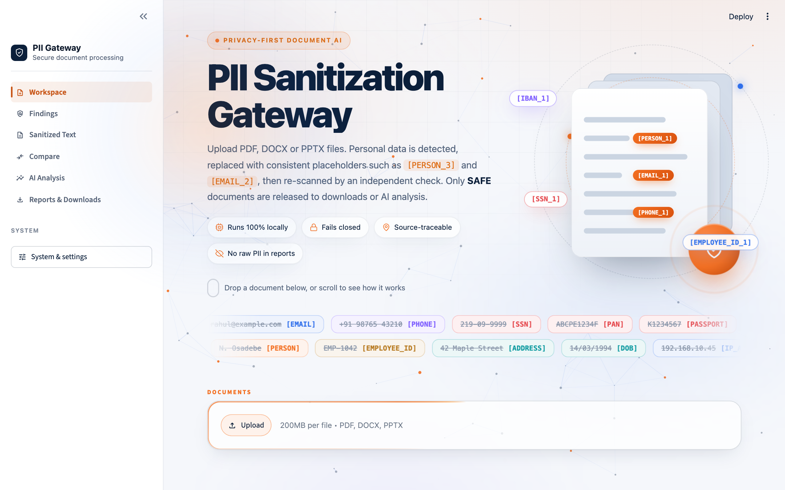
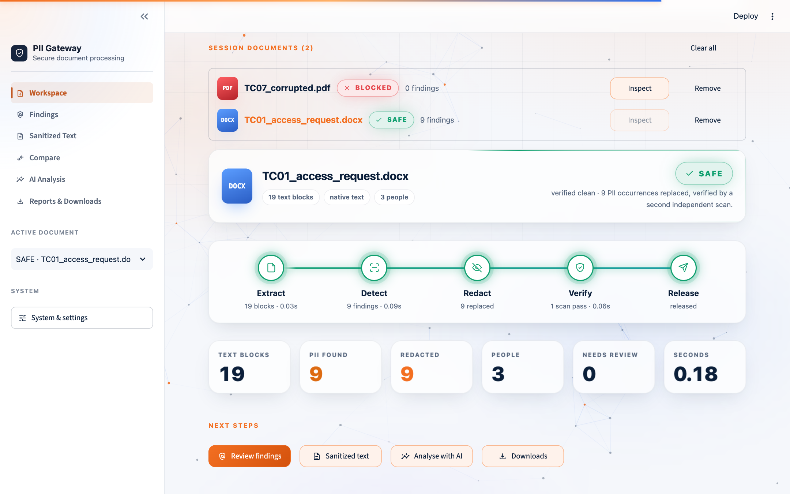
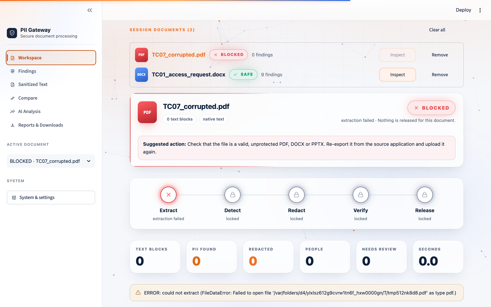
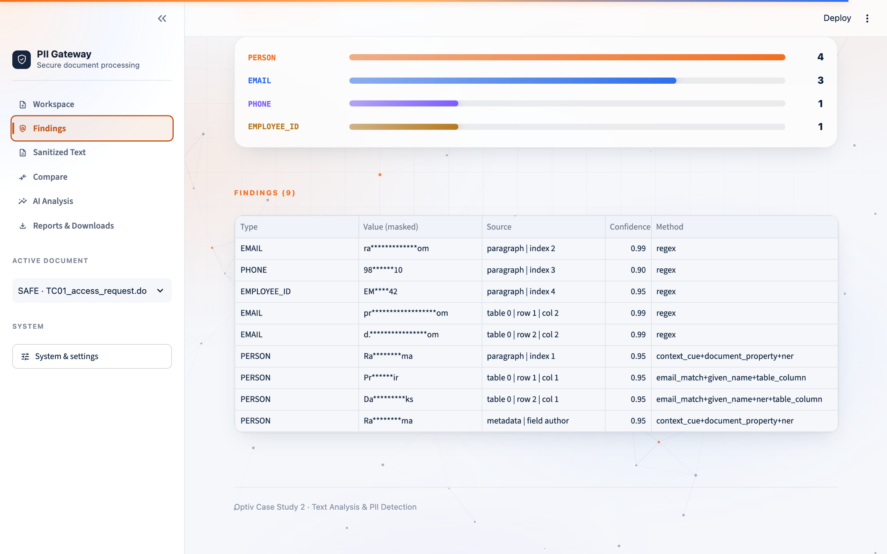
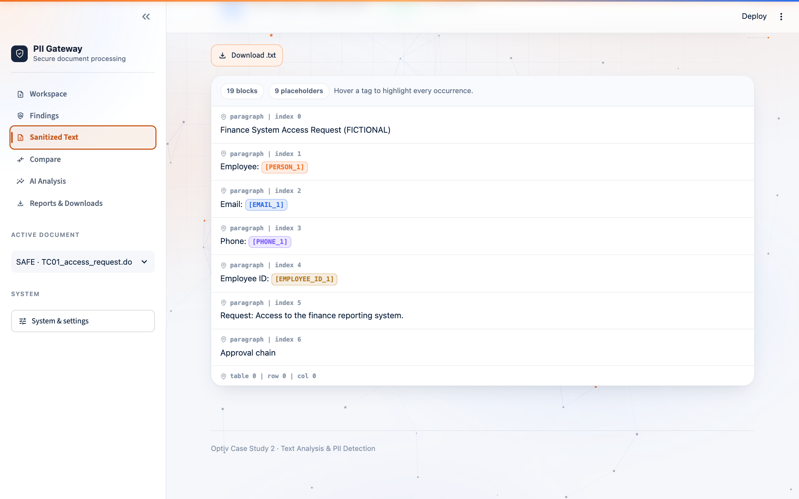
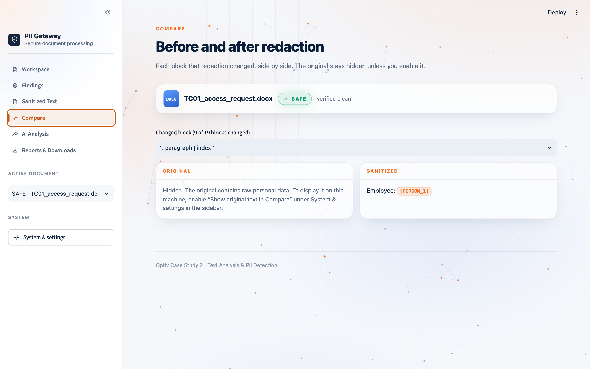
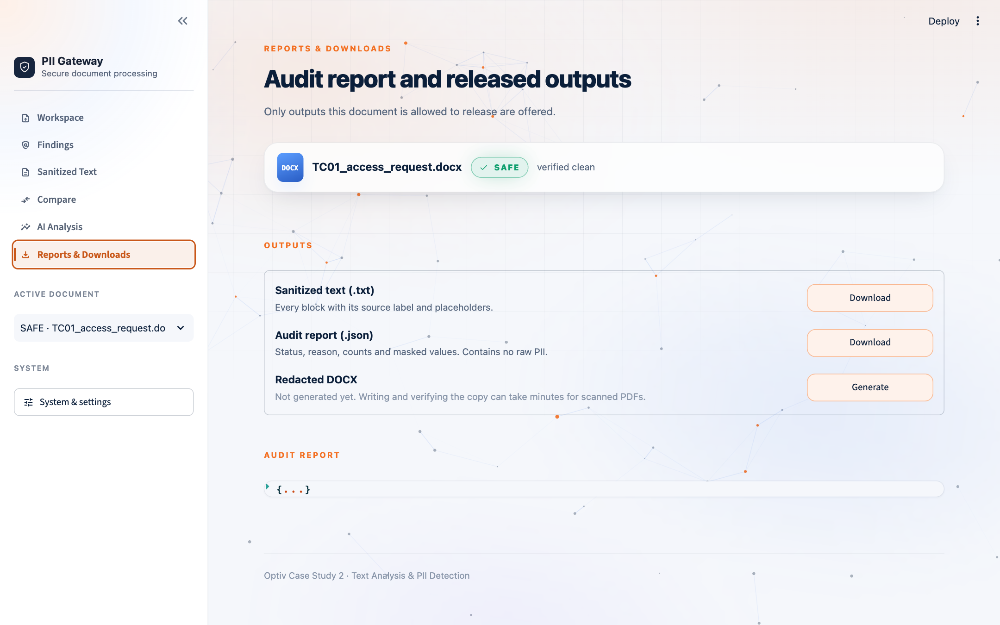
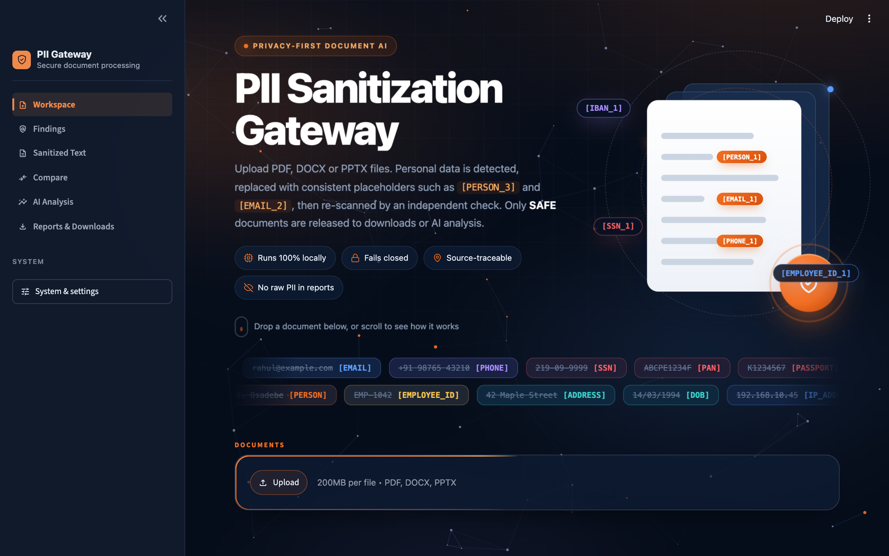

docs/evaluation.md. Those files are not in this copy of the
repository, so those numbers were not re-run for this report. All names, e-mails and IDs used as examples are fictional.
Cadence, a global financial services firm, wants its employees to use an AI agent to analyse business documents. Its policy, however, forbids personal data (PII) from being processed by AI models. We built the PII Sanitization Gateway: a local application that sits in front of the AI, removes the personal data from a document, proves that it is gone, and only then lets the document through.
The Gateway accepts PDF, DOCX and PPTX files, including scanned PDFs and screenshots inside documents, which it reads with OCR. It extracts every piece of text while remembering exactly where each piece came from (page, slide, table cell, file property). It detects PII with 35 rule-and-checksum recognizers plus context-aware name detection, and replaces each value with a typed, consistent placeholder such as [PERSON_1]. It then re-scans the result with a second, independent checker. Only if that check is clean is the document marked SAFE and released to downloads or AI analysis. If anything is uncertain (the file can't be read, OCR is missing, PII remains, a component crashes), the document is BLOCKED and nothing is released. This "fail closed" behaviour is the core security property.
Deliverables: the working application, CLI, test suite and evaluation harness, nine sample test cases, the interview deck with speaker notes, the website guide and this report (chapter 18).
Cadence is a global financial services firm. Employees use an AI document-analysis agent to summarise and question business documents: risk policies, organisational packs, training guides and process documents. These documents routinely contain personal information: employee names, e-mail addresses, phone numbers, staff IDs, and sometimes government IDs, bank details, dates of birth and home addresses. Company policy prohibits PII from being processed by AI models.
| Difficulty | Why it matters |
|---|---|
| Many formats | PDF, Word and PowerPoint store text in completely different structures: pages, paragraphs, tables, text boxes, shapes, speaker notes, comments, file properties. |
| Scanned documents | A scanned PDF has no text at all, only images. Without OCR, a tool would "see nothing" and could wrongly call the document clean. |
| PII hidden in odd places | Names in screenshots, in file "author" properties, in speaker notes, in tiny figure text, or split across table columns. |
| Names have no fixed format | E-mails and phone numbers follow patterns. Names don't, and the same person appears as "Naomi K. Osadebe", "N. Osadebe" and "Osadebe". |
| OCR noise | OCR damages text: "@" disappears, spaces appear inside e-mails, a phone number gets split across two columns. |
| False positives | Policy IDs (GRP-POL-001), case numbers, dates and version numbers look like PII but are not. Over-redaction destroys the document's usefulness. |
| False negatives | A single missed value is a leak. The system must be designed so that misses are caught or the document is blocked. |
| Keeping meaning | Replacing everything with "[REDACTED]" makes analysis useless. The AI still needs to know who approved what, and where. |
| Explainability | Security teams must be able to see what was removed, where, and why, without the audit log itself leaking PII. |
Note: the Cadence sample pack itself asks that its contents not be uploaded to generative-AI tools. That is the exact situation this Gateway makes safe.
The Optiv brief (Case Study 2) asked for a solution that meets the following requirements. The right-hand column shows where each is satisfied.
| Requirement from the brief | How the project meets it |
|---|---|
| Accept different formats: scanned policy documents, PowerPoint, process documents | PDF (text and scanned), DOCX, PPTX extractors; Tesseract OCR for scans and embedded images (§6.2) |
| Extract text while preserving structure and surrounding context | Ordered content blocks with source locations (page, slide, shape, table row/column, notes, properties) (§5.4) |
| Detect and classify PII | 35 structured recognizers plus document-level person detection; each finding has a type, confidence and method (§7) |
| Apply transparent tags to identified entities | Typed, consistent placeholders [PERSON_1] [EMAIL_2] (§8.1) |
| Redact before LLM processing | The AI layer only accepts SAFE results and re-scans outgoing text (egress guard) (§6.7) |
| Preserve source traceability; explainable results | Every block and finding carries its location; Findings view shows type, masked value, source, confidence, method |
| Minimise false positives; ensure undetected PII does not pass downstream | Checksums and label rules, negative tests; independent second scan and fail-closed gate (§7, §8) |
| Workable demonstration (Colab, Jupyter or simple interface) | Local Streamlit web application plus CLI (§12, §17) |
| Target: at least 80 % of document structure retained, with context | Measured 99.8–100 % (team harness, §13.3) |
| Target: nearly 100 % PII detection coverage | Measured 99.5 % recall with 0 residual PII in output (team harness, §13.3) |
The PII Sanitization Gateway is a privacy checkpoint placed between documents and AI. A document goes in. What comes out is either a verified, sanitized version that is safe for AI, or a clear "BLOCKED" verdict with the reason.
| Problem | Our solution |
|---|---|
| PII must not reach the AI | A release gate: only documents that pass an independent second scan are released, and the AI layer re-checks the text right before sending it. |
| Different file formats | One extractor per format, all producing the same NormalizedDocument structure, so every later stage works on any format. |
| Scanned pages and screenshots | Tesseract OCR in parallel. Small figure text is re-read at 600 dpi. If OCR is unavailable, the document is blocked, never passed as empty. |
| Names with no fixed format | Evidence-based detection (staff ID next to the name, matching e-mail, "approved by", table header "Name", known given names, spaCy NER) and propagation of every spelling. |
| OCR damage | OCR-tolerant patterns (e-mails with a lost "@", phone numbers split across columns, one-letter OCR errors in known surnames). |
| False positives | Checksums (Luhn, Verhoeff, IBAN mod-97, SSN rules), "only when labelled" rules for dates and some IDs, business-vocabulary filters, explicit negative tests. |
| Missed PII | Independent safety-net scan, a remediation loop, and BLOCKED if anything remains. |
| Keeping meaning | Typed, numbered placeholders that are consistent across the document. |
| Explainability and audit | Findings with type, masked value, location, confidence and method; a JSON report with no raw PII. |
| Need a demo | A local web app (sidebar workspace) and a CLI. |
The business request is untouched. The file's "author" property, which also contained the name, gets the same tag [PERSON_1], because it is the same person.
Colour key: red = sensitive input; amber = intermediate text that still contains PII; white = control logic; green = sanitized output; grey = audit metadata.
| Path | Role |
|---|---|
app/main.py | Streamlit application: sidebar navigation, document session store, the six views, downloads. |
app/ui.py | Design system: colour tokens (light/dark), styles, animations, HTML components. |
pipeline.py | process() runs extract → detect → redact → verify, with an optional per-stage progress callback; also the CLI and the evaluation entry point. |
extraction/ | pdf_extractor, docx_extractor, pptx_extractor, ocr, figures (small-text regions), images (EMF/WMF via LibreOffice), metadata (file properties). |
detection/ | patterns.py (35 recognizers), names.py (person detection and propagation), lexicon.py (~700 given names). |
redaction/ | redactor.py, verifier.py (second scan + safety net), gate.py (SAFE/BLOCKED), output.py (text + report), file_writer.py (redacted files). |
ai_layer/ | Guarded analysis: SAFE-only, egress guard, local brief or Claude. |
models/, interfaces/ | Shared data structures and interface contracts between modules. |
evaluation/, tests/ | Evaluation harness (metrics, ground truth, regex baseline) and the pytest suite. |
sample_test_cases/ | Nine fictional test documents, expected outputs and an automatic checker. |
presentation/, docs/ | Interview deck, speaker notes, screenshots, this report; technical docs and website guide. |
interfaces/), so any one can be replaced without touching the others. For example, the evaluation harness can plug in a baseline detector.ContentBlock text, source ("table 0 | row 1 | col 2"), block_type, metadata {block_id, location, ...}
NormalizedDocument document_id, source_type (pdf|docx|pptx), file_name, content [ContentBlock], metadata {parser, ocr_used, status, warnings}
PIIFinding pii_type, value, source, confidence, detection_method, start, end, validated, metadata {block_id, entity_key}
GateResult status (SAFE|BLOCKED), reason, document (sanitized copy), redaction, verification, passes
PipelineResult file_name, original, findings, gate, timings {extract, detect, redact_verify}, summary()Source strings are human-readable on purpose: page 3, slide 2 | shape Table 2 | row 1 | col 1, slide notes | slide 1 | paragraph 0, metadata | field author, paragraph | index 2 | image image1.png | image OCR.
This chapter follows one document through the system and names the exact library used in each phase, and why.
file_uploader accepts one or more PDF/DOCX/PPTX files (up to 200 MB each).hashlib). The first 16 hex characters identify the document, so re-uploading the same content does not re-process it.tempfile) that is deleted immediately afterwards.extraction/)| Format | Library | What is extracted and how |
|---|---|---|
PyMuPDF (pymupdf 1.28) | Native text layer with positions. Pages with no text layer are rendered to images and sent to OCR. Low-confidence or small-text regions (figures, screenshots) are found and re-read at 600 dpi. Document properties are read too. | |
| DOCX | python-docx 1.2 (+ lxml) | Body paragraphs, tables (row/column kept), headers/footers, text boxes, footnotes, endnotes, comments, file properties, and embedded screenshots (sent to OCR). |
| PPTX | python-pptx 1.0 | Every shape including groups and tables, speaker notes, pictures (OCR), file properties. |
| Images / scans | Tesseract 5.5 via pytesseract 0.3; Pillow 12 | Pillow converts to greyscale and auto-contrasts, then Tesseract OCR returns paragraphs with word boxes and confidence. Pages are OCR'd in parallel (a ThreadPoolExecutor drives separate Tesseract processes, up to 8; OMP_THREAD_LIMIT=1 prevents CPU oversubscription). |
| EMF/WMF | LibreOffice (optional) | Vector pictures inside Office files are converted to raster for OCR when LibreOffice is installed. Otherwise they are listed in warnings for manual review. |
Output: a NormalizedDocument of ordered blocks, each with its source. Never raises: a corrupt or unsupported file produces an ERROR warning, which later makes the gate block the document.
detection/)re plus hand-written validators): 35 patterns for e-mail, phone, SSN, PAN, Aadhaar, passport, card, IBAN, bank account, DOB, address, IP, employee ID and more (detail in §7).en_core_web_sm model for named-entity recognition, combined with rule-based evidence (context cues, e-mail corroboration, table headers, a given-name lexicon) and document-wide propagation.PIIFindings with type, value, location, confidence, method and an entity_key linking spellings of the same person.redaction/redactor.py, pure Python)verifier.py, gate.py)output.py, file_writer.py)Ra********ma) and per-run keyed hashes. No raw PII.apply_redactions destroys the underlying pixels and text. Figures that contained PII are removed, metadata is rewritten, and the result is re-OCR'd at 400 dpi until clean.zipfile) and every XML part is rewritten with lxml: body, tables, headers, footers, text boxes, notes, comments, properties, hyperlinks. Screenshots that contained PII are replaced with a neutral image (Pillow).ai_layer/)AnalysisBlocked.ANTHROPIC_API_KEY is set. It calls the Anthropic Messages API with Python's standard urllib, sending sanitized text only, with a system prompt telling the model never to re-identify anyone.app/)ui.py) provides the design, animations and light/dark theming.pipeline.process().| Type | Rule (precision comes from validation or labels) |
|---|---|
| Standard addresses plus OCR-damaged forms (space around "@", lost "@" with a known domain, truncated domain). | |
| PHONE | International +CC, North-American, labelled ("Tel:", "Mobile"), and fragments split across table columns by OCR (never swallowing a neighbouring date). |
| SSN | ddd-dd-dddd with US Social Security validity rules; labelled variants; "SSN ending 4821". |
| PAN · AADHAAR · NATIONAL_ID · PASSPORT | Indian PAN (entity-type letter check), Aadhaar (Verhoeff checksum), UK NINO, PESEL/TIN when labelled, passport when labelled. |
| CREDIT_CARD · IBAN · BANK_ACCOUNT | Cards with the Luhn checksum; IBAN with mod-97; labelled account numbers; "card ending 4421". |
| DOB | Only when labelled ("DOB", "date of birth", "born"). Ordinary business dates are never PII. |
| ADDRESS | Street number + name + suffix (+ unit, city, state, ZIP); "City, ST 12345"; UK postcode; labelled Indian PIN. |
| IP_ADDRESS | IPv4 with valid octets (section numbers like 1.2.3.4 are excluded). |
| EMPLOYEE_ID | EMP-41077, contractor and director prefixes (MER-IN-4471, DIR-0058, CTR-, STF-), labelled staff/badge IDs, OCR splits. |
Deliberately not matched: business identifiers such as GRP-POL-001, ISS-2026-0112, RSK-4488, CTL-IAM-04. These are pinned by tests, so a future change cannot start redacting them.
| Evidence | Example (fictional) | Confidence |
|---|---|---|
| Staff ID right after the name | Naomi K. Osadebe (EMP-41077) | 0.95 |
| Matching e-mail anywhere in the file | Marguerite Vossberg + m.vossberg@… | 0.90 |
| Document property (author, last modified by) | author: Jane Example | 0.90 |
| Context cue before | "approved by …", "Owner: …", "Dear …" | 0.85 |
| Table column or row label | column "Name", "Owner", "USERS" | 0.85 |
| Title + surname | Ms Prieto-Ramos | 0.85 |
| Role right after | …, Chief Risk Officer | 0.80 |
| Known given name + surname | Amanda Singh (lexicon of ~700 names) | 0.75 |
| spaCy NER alone | Sneha M. Vaidyanathan | 0.60 |
entity_key, and therefore one placeholder.Regular expressions are precise and explainable for values with a fixed shape, especially when backed by checksums, but they cannot find names. A statistical NER model finds names but makes mistakes and gives no checksum-like guarantee. Document-level evidence (the same person's e-mail on another slide, a "Name" column header) is what makes name detection reliable on real business documents. Combining all three, and then verifying independently, gives both high recall and explainability.
Jane Smith emailed John Doe becomes [PERSON_1] emailed [PERSON_2]. The same value, or the same person under a different spelling, always gets the same tag across the whole document. An AI can still reason about relationships ("who approved what") without learning who anyone is. A generic "[REDACTED]" would destroy that meaning.
| Status | Reason | When it happens |
|---|---|---|
| SAFE | verified_clean | The first re-scan found nothing. |
| SAFE | verified_after_remediation | Residuals were found, redacted, and the next scan was clean. |
| BLOCKED | extraction_failed | The file could not be opened or parsed (corrupt, protected, wrong type). |
| BLOCKED | incomplete_extraction | Part of the content was never read (e.g. a scanned page while OCR is missing). |
| BLOCKED | no_content | Nothing was extracted, so nothing could be verified. |
| BLOCKED | residual_pii | PII was still present after the last allowed pass. |
| BLOCKED | verification_error | The detector crashed. Only the exception type is recorded. |
The safety net (redaction/verifier.py) is a separate, conservative set of checks: e-mail, phone, SSN, card (Luhn), IBAN (mod-97), PAN, passport after the word "passport", labelled DOB, street addresses and IPv4. Because it is implemented separately from the main detector, a bug or blind spot in one is unlikely to be repeated in the other. It is used in verification, at AI egress and when verifying written redacted files.
Reports and logs record what happened (type, count, location, method, confidence, gate status and reason) and identify values only by masked forms and keyed hashes. The hash key is random per run, so short values such as phone numbers cannot be reversed with a lookup table.
| Threat | Control in this project |
|---|---|
| Raw PII sent to an AI model | Release gate; AI layer accepts SAFE only; egress guard re-scans the outgoing text. |
| Scanned page silently skipped | Missing OCR or OCR failure → incomplete_extraction → BLOCKED. |
| Detector misses a value | Independent safety net; remediation loop; BLOCKED if anything remains. |
| Component crash leads to a partial result | Any exception in verification → verification_error → BLOCKED. |
| Redacted PDF still contains hidden text or pixels | True redaction (apply_redactions destroys pixels and text), figure removal, 400 dpi OCR re-check. |
| Audit log becomes a PII store | Masked values and per-run keyed hashes only. |
| Malicious content in a document rendered in the UI | All document-derived text is HTML-escaped before display. |
| Accidental display of raw PII on screen | Original text is hidden in Compare unless the user enables it in settings; masked values everywhere else. |
| Data persisted on disk or in a database | No database. Session-only memory; temporary files are deleted after processing. |
| Third-party services seeing the document | All processing is local; no cloud OCR/NER; no web fonts or CDNs in the UI. |
| Technology | Version | Phase | Purpose and reason |
|---|---|---|---|
| Python | 3.10+ (3.14 used) | All | The strongest ecosystem for document parsing, OCR and NLP; one language for pipeline, UI and tests. |
| PyMuPDF | 1.28.2 | Extraction, redacted PDF | Fast PDF text with positions, page rendering for OCR, and true redaction (apply_redactions). |
| python-docx | 1.2.0 | Extraction | Native Word structure: paragraphs, tables, headers, properties. |
| python-pptx | 1.0.2 | Extraction | Native PowerPoint structure: shapes, groups, tables, notes. |
| lxml + zipfile | 6.1.3 / stdlib | Extraction, redacted DOCX/PPTX | Direct XML access to every part of Office files (text boxes, comments, notes, hyperlinks) that the high-level libraries do not expose. |
| Tesseract + pytesseract | 5.5.2 / 0.3.13 | OCR | Free, mature, fully local OCR with word boxes and confidence. |
| Pillow | 12.3.0 | OCR pre-processing, image replacement | Greyscale and auto-contrast before OCR; neutral replacement images. |
| LibreOffice | optional | Extraction | Converts EMF/WMF vector pictures so they can be OCR'd. |
| spaCy + en_core_web_sm | 3.8.16 / 3.8.0 | Detection (names) | Fast CPU named-entity recognition that runs locally and deterministically; the model is swappable (en_core_web_lg). |
| re, hashlib, hmac (stdlib) | — | Detection, audit, session ids | Patterns and validators; SHA-256 ids; keyed hashes in reports. |
| Streamlit | 1.65.0 | User interface | Interactive web app in pure Python with uploads, session state and downloads; runs locally. |
| pandas | 3.0.6 | User interface | Tabular findings and residuals for the data tables. |
| HTML/CSS/JS (inline) | — | User interface | Custom design, light/dark tokens, animations; no external fonts or CDNs. |
| urllib (stdlib) | — | AI layer (optional) | Calls the Anthropic Messages API without adding an SDK dependency. |
| pytest | 9.1.1 | Testing | Unit and end-to-end tests on generated fake documents. |
The single most important constraint is the problem itself: we may not send raw personal data to a third party. Any tool that needs the raw document to leave the machine before redaction is ruled out, however good it is. The second constraint is explainability and testability: a security team must understand and reproduce every decision.
| Option | Why not chosen (or chosen) |
|---|---|
| Tesseract (chosen) | Free, local, mature, good on typed business documents, gives word boxes for true PDF redaction. |
| AWS Textract, Google Vision, Azure Document Intelligence | Excellent accuracy, but the raw scanned page with all its PII would be uploaded to a cloud service before any redaction, which defeats the purpose. They also add cost and an internet dependency. |
| EasyOCR, PaddleOCR | Deep-learning OCR needs PyTorch/Paddle (large installs, GPU for good speed); on a CPU laptop it is slower for 35-page scans and harder to install for a demo. |
| Option | Why not chosen (or chosen) |
|---|---|
| Rules + checksums + spaCy + document evidence (chosen) | Local, fast, deterministic, explainable per finding; tuned for OCR noise, tables and document-wide name propagation. |
| Microsoft Presidio | A good open-source framework built on the same idea (regex + spaCy). We needed document-level logic that Presidio does not do out of the box (cross-slide e-mail corroboration, table-header evidence, one placeholder per person across spellings, OCR-split phone fragments), plus tight integration with source locations. A custom detector gave that control without an extra framework. |
| Transformer NER (BERT, RoBERTa) | Often more accurate on names, but needs much larger models, slower CPU inference or a GPU, and is harder to explain. A good future upgrade behind the same interface (§16). |
| Using an LLM to find PII | Sending the raw text to a hosted LLM to find PII would itself break the policy. A local LLM would be heavy, slow and non-deterministic, which is hard to test and audit. |
| Cloud DLP (Google Cloud DLP, AWS Macie/Comprehend, Azure Purview) | Strong products, but they need the raw data in the cloud, add cost and vendor lock-in, and are not available offline. In an enterprise they could complement this tool as a second opinion. |
| Regex only | Cannot find names and produces false positives on numbers without context. |
| Option | Why not chosen (or chosen) |
|---|---|
| PyMuPDF (chosen) | Fast, gives text positions, renders pages for OCR, and is one of the few Python libraries that performs true redaction (removing underlying text and pixels). |
| pdfplumber / pdfminer.six / PyPDF2 | Good for text and tables, but no page rendering for OCR and no true redaction, so a second library would still be needed. |
| python-docx / python-pptx + lxml (chosen) | Keep native structure (tables, shapes, notes, properties) for traceability; lxml covers parts the libraries don't expose. |
| Convert Office → PDF first (LibreOffice) | Loses structure (which slide, shape, table cell, speaker note, property), hurting traceability; heavy dependency; only used optionally for EMF/WMF pictures. |
| Apache Tika | Broad format support but needs a Java server and returns flattened text without precise locations. |
| Option | Why not chosen (or chosen) |
|---|---|
| Streamlit (chosen) | Full interactive web app in pure Python (uploads, tables, downloads, session state), quick to build and easy to demo locally; the brief explicitly allowed a "simple custom interface". |
| Google Colab | Allowed by the brief, but documents would be uploaded to Google's cloud runtime. That is not acceptable for real PII, and it is not a usable tool for analysts. |
| Jupyter Notebook | Good for exploration, but not an application a business user can operate; harder to enforce the release flow. |
| React/Angular + FastAPI/Flask/Django | A production-grade option, but two codebases, an API layer and much more time for a case study. The pipeline is already separated from the UI, so this migration is possible later (§16). |
| Gradio | Similar to Streamlit, aimed at model demos, with less control over multi-view workspace layouts. |
| Desktop app (PyQt, Electron) | Packaging and distribution overhead; a browser UI on localhost gives the same "local only" property more simply. |
The app runs at http://localhost:8501. A left sidebar holds the navigation, the active-document picker and a collapsible System & settings panel. The main area shows the selected view.

| View | What it shows |
|---|---|
| Workspace | Upload; live processing status; the session document list (Inspect / Remove / Clear all); for the selected document: result card with the SAFE/BLOCKED verdict (and a suggested action if blocked), the five-stage tracker with real per-stage numbers, six metrics, warnings, and next-step buttons. Before upload: "How it works", key facts and design principles. |
| Findings | Counts by type and a table with type, masked value, source, confidence, method and validated flag; "needs review" candidates and residual findings when present. Available for BLOCKED documents as a diagnostic view. |
| Sanitized Text | The releasable text block by block, with source labels and coloured placeholders (hovering a tag highlights every occurrence); .txt download. Locked for BLOCKED documents. |
| Compare | Before/after for each changed block. The original stays hidden unless enabled in settings. Locked for BLOCKED documents. |
| AI Analysis | Optional question; runs the guarded analysis on sanitized text; result kept while you navigate. Locked for BLOCKED documents. |
| Reports & Downloads | Sanitized text (.txt), audit report (.json), and the redacted original-format file (generate on demand, verified). Only outputs the result permits are offered; the full JSON report is viewable. |






<style> and <svg>, so CSS is installed by a script and icons are CSS masks. Every document-derived string is HTML-escaped.
Result: 247 passed, 3 skipped. All tests use fake data generated on the fly. Coverage includes:
| Case | What it tests | Actual result |
|---|---|---|
| TC01 access_request.docx | Paragraphs, table, author property | SAFE · 9 PII · 3 people |
| TC02 org_chart.pptx | Table, text box, speaker notes, 3 phone formats | SAFE · 11 PII · 4 people |
| TC03 hr_record.pdf | 10 PII types in a native PDF | SAFE · 10 PII |
| TC04 scanned_incident.pdf | Image-only page → OCR | SAFE · 5 PII · OCR used |
| TC05 no_pii_policy.docx | Hard negatives (false-positive test) | SAFE · 0 PII |
| TC06 name_variants.docx | 4 spellings → one tag | SAFE · 7 PII |
| TC07 corrupted.pdf | Unreadable file | BLOCKED · extraction_failed |
| TC08 empty.docx | No body text | SAFE · 0 PII (file property counts as content) |
| TC09 screenshot_in_docx.docx | PII inside an embedded image | SAFE · 3 PII |
The checker (sample_test_cases/check_test_cases.py) reports ALL PASS, with two documented known gaps: a bare first name in TC06 and an OCR-merged name in TC09 (see chapter 15).
| Metric | Result |
|---|---|
| Recall (required PII found) | 99.5 % (1,002 / 1,007): PPTX 100 %, DOCX 100 %, scanned PDF 99.4 % |
| Residual PII values in sanitized output | 0 |
| Verifier said SAFE while PII remained | 0 (consistent on all three files) |
| Structure retention | 99.8–100 % (brief's target ≥ 80 %) |
| Context retention (non-PII words kept) | 98.3–100 % |
| Traceability (findings with correct location) | 99.6 % |
| Type accuracy | 100 % |
| Precision vs. gold labels | PPTX 100 %, DOCX 100 %, PDF 86 % |
| Processing time | ~105 s for all three on 2 cores (scanned PDF OCR ~87 s) |
Interpretation and caveats. The 5 "misses" were span-boundary differences; the PII itself was still redacted. Most PDF "false positives" were, on manual review, real PII missing from the automatically built gold labels (people without e-mail addresses, users in a screenshot, phone fragments). The gold labels were built by automated harvesting plus manual items and still need a human spot-check. These numbers come from docs/evaluation.md and were not re-run for this report.
| Brief expectation | Status | Evidence |
|---|---|---|
| Multiple formats incl. scanned documents | Met | PDF/DOCX/PPTX; OCR of scanned pages and embedded images; TC03/TC04/TC09. |
| Structure and context preserved (≥ 80 %) | Met | 99.8–100 % structure, 98.3–100 % context (team harness). |
| Detect and classify PII | Met | 35 recognizers + names; 100 % type accuracy (team harness). |
| Transparent tags | Met | Typed, consistent placeholders; one tag per person. |
| Redact before LLM processing | Met | Gate + SAFE-only AI layer + egress guard; tests. |
| Source traceability and explainability | Met | 99.6 % traceability; Findings view. |
| Near-100 % coverage, no PII downstream | Met on samples | 99.5 % recall and 0 residual on the Cadence files; 2 known gaps on our own harder fictional tests. |
| Working demonstration | Met | Local web app with six views; CLI; demo files. |
| Case | What leaks | Why | Possible fix |
|---|---|---|---|
| TC06 | A bare first name ("Rafael") after the full name was detected | Propagation covers distinctive surnames and some first names, but not this one | Propagate the capitalised first name of every confirmed person when it is not a common word. |
| TC09 | "AnitaPatel" (OCR merged two words in a screenshot) | CamelCase OCR tokens are not split before name matching | Split merged CamelCase tokens; treat user lists in screenshots as PII by default. |
| Area | Next step |
|---|---|
| Close known gaps | First-name propagation, CamelCase OCR splitting, screenshot user-list rule; add both cases as regression tests. |
| Better name detection | Optional transformer NER (local model) behind the existing detector interface; larger spaCy model; multilingual models. |
| Human review | A review queue for "needs review" candidates and BLOCKED documents, with approve/override and an audit trail. |
| Evaluation | Human-verified gold set; harness in CI with minimum-recall and zero-residual gates on every change. |
| Formats | XLSX, e-mail (.eml/.msg), images (PNG/JPEG), plain text. |
| Enterprise deployment | The pipeline as a stateless service behind a queue, deployed as a mandatory proxy in front of the AI agent so no path bypasses it; horizontally scaled OCR workers; SSO; encrypted temporary storage; central append-only audit log (masked values only). |
| Policy controls | Per-entity policies (redact, tokenise, allow), per-department rules, reversible tokenisation in a secure vault where business processes need re-identification. |
# 1. OCR engine (macOS)
brew install tesseract
# 2. Python environment and libraries (includes the spaCy English model)
python3 -m venv .venv
.venv/bin/pip install -r requirements.txt.venv/bin/streamlit run app/main.py # opens http://localhost:8501
# after editing code or .streamlit/config.toml: stop with Ctrl+C and start again.venv/bin/python pipeline.py file.pdf file.docx --out output [--redacted-files] [--analyze]
# writes <name>.report.json, <name>.sanitized.txt (SAFE only), redacted copy, AI brief; exit code 1 if anything BLOCKED
.venv/bin/python -m pytest -q tests # 247 passed, 3 skipped
.venv/bin/python sample_test_cases/check_test_cases.py # ALL PASS (2 known gaps)| Setting | Effect |
|---|---|
.streamlit/config.toml | Light and dark theme colours (switch with the ⋮ menu); usage statistics disabled. |
ANTHROPIC_API_KEY | Enables Claude in AI Analysis (sanitized SAFE text only); otherwise the offline brief is used. |
ANTHROPIC_MODEL | Claude model id (default claude-sonnet-5-5). |
TESSERACT_CMD | Path to Tesseract (Windows). |
OCR_WORKERS | Parallel OCR processes (default: CPU count, max 8). |
PII_SPACY_MODEL / PII_DISABLE_NER=1 | Choose the spaCy model / use rules-only name detection. |
| Deliverable | Location |
|---|---|
| Working application | app/main.py, app/ui.py |
| Processing pipeline and CLI | pipeline.py, extraction/, detection/, redaction/, ai_layer/ |
| Test suite and evaluation harness | tests/, evaluation/ |
| Sample test cases, expected outputs, checker | sample_test_cases/ (README explains every case) |
| Interview deck (13 slides, editable) | presentation/Optiv_Case_Study_2_PII_Detection.pptx |
| Speaker notes and 12 Q&As | presentation/Optiv_Presentation_Speaker_Notes.txt |
| Technical documentation | README.md, docs/detection.md, docs/redaction.md, docs/evaluation.md, docs/WEBSITE_GUIDE.md |
| This final report | presentation/PII_Gateway_Final_Report.pdf (source: presentation/report_src/) |
| Term | Meaning |
|---|---|
| PII | Personally identifiable information: data that identifies a person directly (name, e-mail, ID number) or indirectly when combined with other data. |
| OCR | Optical character recognition: turning an image of text into machine-readable text (Tesseract here). |
| NER | Named-entity recognition: a language model that labels spans such as PERSON (spaCy here). |
| Placeholder / tag | A typed token such as [PERSON_1] that consistently replaces a value. |
| Checksum | A mathematical validity check (Luhn for cards, Verhoeff for Aadhaar, mod-97 for IBAN) that rules out random numbers. |
| Safety net | The independent regex scanner used in verification, at AI egress and for written files. |
| Gate | The decision step that marks a document SAFE or BLOCKED. |
| Egress guard | A final scan of outgoing text immediately before an AI call. |
| Fail closed | When in doubt, block; never release unverified content. |
| Recall / Precision | Share of real PII found / share of detections that are real PII. |
| Content block | One unit of extracted text together with its source location. |
| Question | Answer |
|---|---|
| Why not regular expressions alone? | Names have no fixed format and many numbers look like PII without being PII. Regex with checksums handles structured IDs; NER plus document evidence handles names. |
| How do you stop PII reaching the LLM? | Redact → independent re-scan → remediate → gate → egress guard. Only SAFE text is ever released; failed or partial extraction blocks. |
| What happens when OCR or extraction fails? | The document is BLOCKED with a reason. "Nothing read" is never treated as "nothing found". |
| How do you limit false positives? | Checksums, "only when labelled" rules, business-vocabulary filters and negative tests for policy and case IDs. |
| How do you measure structure retention? | Pages, slides, tables and non-PII words compared with an independent reference extraction; measured 99.8–100 % vs. the 80 % target. |
| Is 99.5 % recall enough? | Recall alone is not the guarantee; the independent re-scan and the gate are. Measured residual PII in released output was zero. |
| Why not use an LLM to detect PII? | Sending raw text to a hosted LLM would itself break the policy; a local LLM is heavy, slow and non-deterministic, which is hard to audit. |
| How is auditability achieved without storing PII? | Reports log type, location, method, confidence and gate reason, with masked values and per-run keyed hashes only. |
| How would you scale it? | Stateless service behind a queue, scaled OCR workers, deployed as a mandatory proxy in front of the AI agent. |
| What are the main limitations? | OCR quality, ambiguous names, untested locales, English-only NER, deliberate over-redaction, and gold labels pending human review. |
End of report. Optiv Case Study 2 · Text Analysis & PII Detection · 14 October 2026.